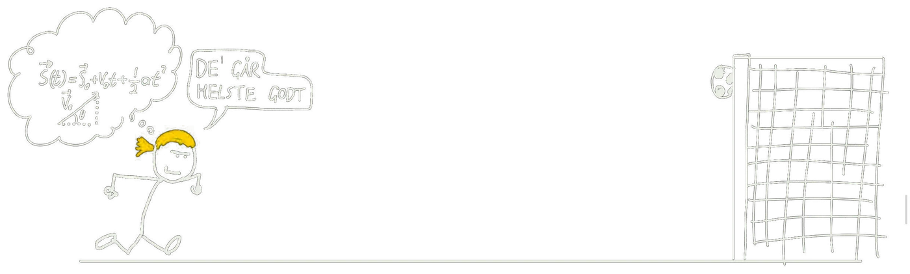
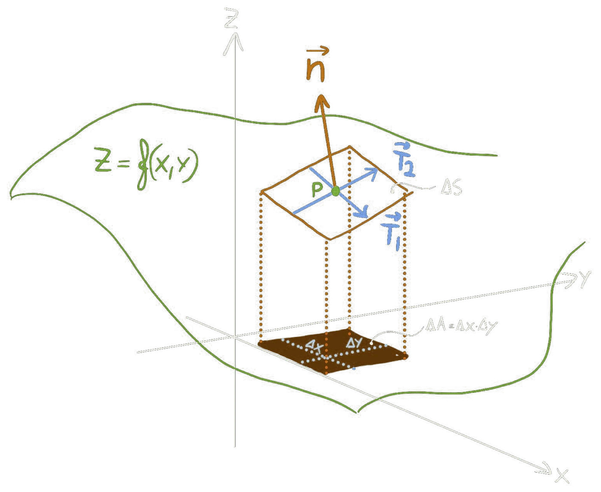
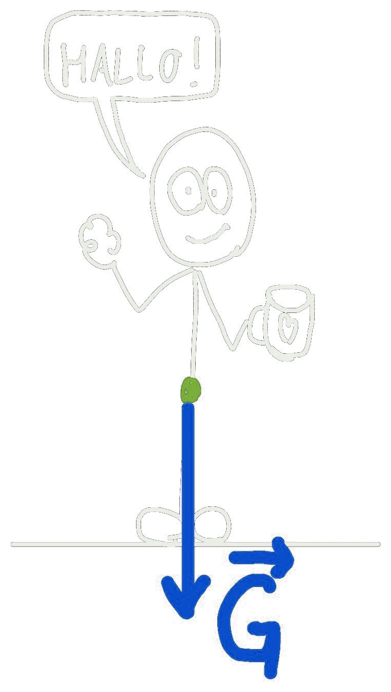
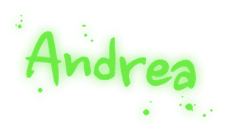
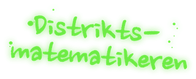
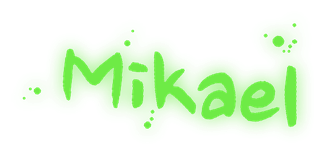
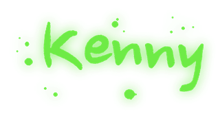

Dr. Normann
Ph.d. i matematisk kosmologi
Ben har doktorgrad i matematisk kosmologi og har formidlet og undervist realfag i ti år. I 2018 vant han den nasjonale finalen i Forsker Grand Prix.
Vi står i en realfagskrise
Realfagsambassaden er en ambassade for realfagene i Norge. Ambassadørene våre er fysikere, matematikere og formidlere som lager gratis læringsressurser, podkast og arrangementer, slik at flere unge velger realfag og opplever mestring.
Ressurssider

Åpent nåVideo, tavleforklaringer, oppgaver med hint og kode du kan kjøre selv. Forkurset er klart.
Gå til fysikkhjelp.no →
Under oppbyggingAlgebra, funksjoner, derivasjon og integrasjon, forklart på samme måte. Kalkulus kommer først.
Gå til matematikkhjelp.no →Grunnstoffer, reaksjoner og støkiometri, steg for steg.
Celler, genetikk og økologi, med tegninger som gjør det lettere å huske.

For forelesere og fagfolkDonér undervisningsmaterialeHar du notater, lysbilder eller utledninger i et realfag? Vi gjør dem om til gratis læringssider, og du blir kreditert. →Podkast
Samtaler om fysikk, matte og alt det rare og fantastiske realfagene kan fortelle oss om verden. Med ekte forskere, gode historier og spørsmål du ikke turte å stille i timen.
Første episode kommer snart.

Ambassadørene
Ph.d. i matematisk kosmologi
Ben har doktorgrad i matematisk kosmologi og har formidlet og undervist realfag i ti år. I 2018 vant han den nasjonale finalen i Forsker Grand Prix.


Dobbel mastergrad
Andrea har i en årrekke vært ansiktet utad og selve drivkraften i NTNU Fysikkstudio, som lager fysikkvideoer av høy kvalitet.

Ph.d. i fysikk
Siebe har doktorgrad i fysikk og brenner for å formidle matematikk og realfag.

Ph.d. i matematikk
Mikael har doktorgrad i matematikk.

Newton-rommet
Kenny har erfaring fra Newton-rommet.
Samarbeid
Vi samarbeider gjerne med skoler, universiteter, bedrifter og stiftelser som vil styrke realfagene i Norge. Det kan være støtte til nye ressurser, foredrag og arrangementer, eller fagfolk som vil bli ambassadører selv.
Kontaktinformasjon kommer snart.